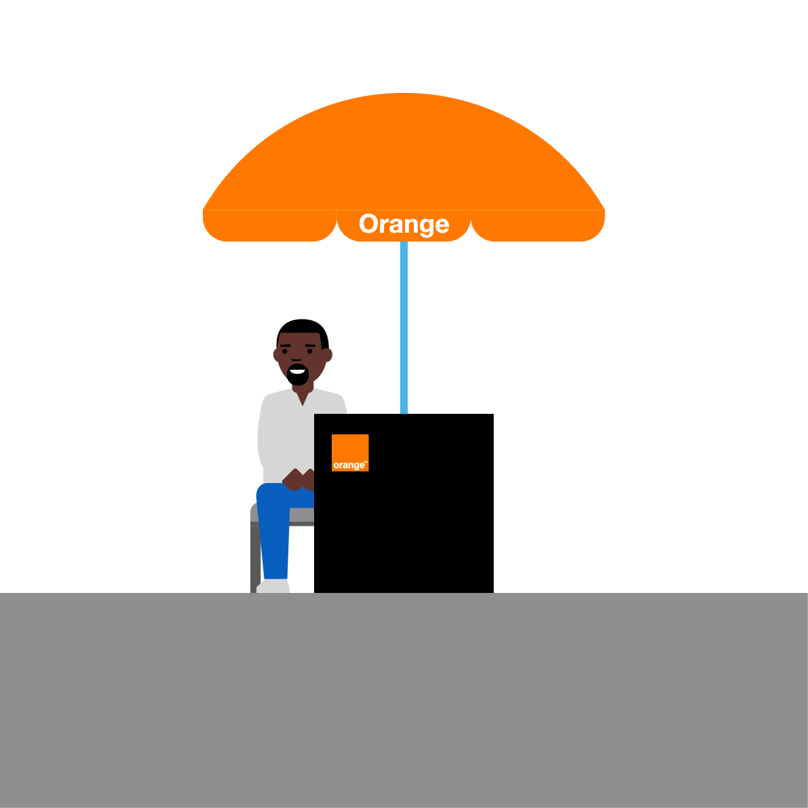

Mon Alternance

Orange est une entreprise de télécommunications française, créée en 1994. Elle est le premier opérateur historique en France et est également présente dans de nombreux autres pays, notamment en Europe, en Afrique et au Moyen-Orient. Avec plus de 266 millions de clients dans le monde, Orange est l'un des principaux acteurs du marché des télécommunications.
Orange est une entreprise qui investit beaucoup dans la recherche et le développement pour proposer les meilleures technologies à ses clients. Elle est également engagée dans des initiatives sociales et environnementales, avec notamment des actions pour réduire son empreinte carbone.
En tant qu'alternant chez Orange, j'ai la chance de travailler dans un environnement stimulant et innovant. Je travaille avec des professionnels expérimentés et passionnés, qui m'ont transmis beaucoup de connaissances et de compétences. J'ai également pu participer à des projets passionnants, qui m'ont permis d'acquérir une expérience précieuse dans le monde professionnel.
La recherche d'alternance est une étape importante pour les étudiants, car elle leur permet d'acquérir une expérience professionnelle concrète et de mettre en pratique les connaissances théoriques acquises en cours. Cependant, cette recherche peut s'avérer difficile et stressante. Voici comment j'ai pu la mener à bien.
Tout d'abord, j'ai commencé par chercher des offres d'alternance sur les sites spécialisés, comme LinkedIn, Indeed. J'ai également consulté les sites des entreprises qui m'intéressaient pour voir si elles proposaient des offres d'alternance. J'ai envoyé de nombreuses candidatures, en veillant à personnaliser chacune d'entre elles en fonction de l'entreprise et du poste proposé.
Enfin, j'ai mis en avant mes compétences et mon projet professionnel en créant un profil en ligne détaillé sur LinkedIn et en rédigeant une lettre de motivation personnalisée pour chaque candidature.
Au final, j'ai réussi à décrocher une alternance dans une entreprise qui correspondait parfaitement à mes aspirations professionnelles. Cette recherche m'a permis de développer mes compétences en communication, de
Voici les différentes compétences que je développe pendant mon alternance.
L'installation est l'une des missions clés du technicien chez Orange. Elle consiste à mettre en place les équipements de télécommunications chez les clients, en veillant à ce que tout fonctionne correctement et que les clients soient satisfaits du service fourni. Pour réaliser une installation réussie, le technicien doit tout d'abord établir un diagnostic de l'environnement technique du client. Il doit vérifier la compatibilité des équipements avec le réseau Orange et s'assurer que les installations électriques sont conformes aux normes en vigueur.
Pour réaliser un dépannage réussi, je dois tout d'abord établir un diagnostic de la panne. Je dois être en mesure d'analyser les données et les mesures pour identifier les problèmes et trouver la solution la plus adaptée. Ensuite, je dois effectuer les réparations nécessaires, en veillant à respecter les procédures et les normes de qualité en vigueur. Je dois être capable de remplacer les équipements défectueux, de réparer les connexions endommagées et de configurer les équipements pour qu'ils fonctionnent correctement.
En tant que technicien chez Orange, la communication est une compétence essentielle pour assurer un service de qualité aux clients. Tout au long de mes interventions, je dois être en mesure de communiquer clairement et efficacement avec les clients, les équipes techniques et les différents intervenants impliqués. Je dois être en mesure de fournir des explications claires et concises sur les problèmes détectés, les réparations nécessaires et les solutions les plus adaptées à chaque situation. Cela implique d'être à l'écoute des besoins et des préoccupations des clients.